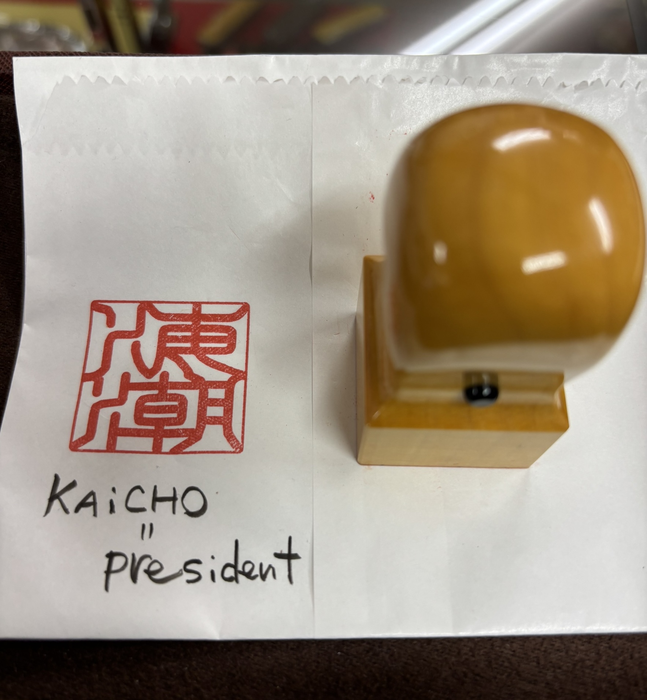
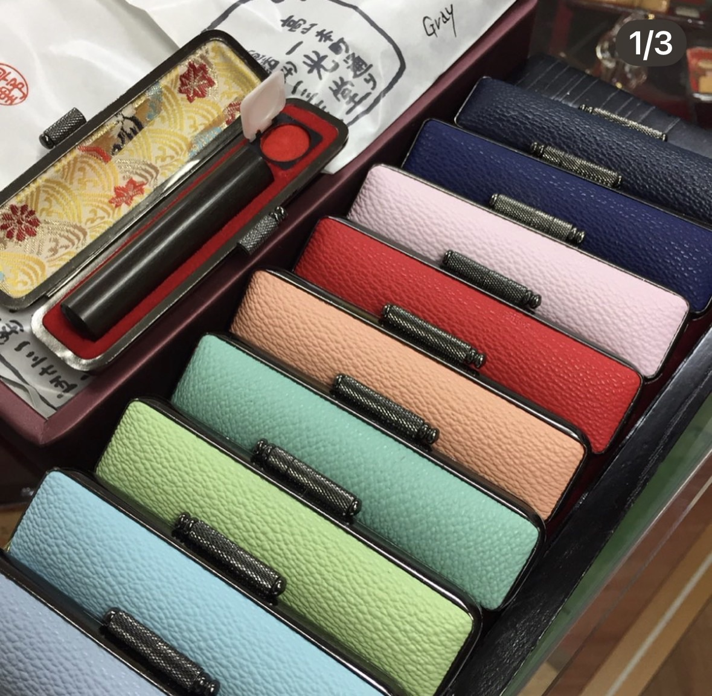

Your Name in Japanese
Foreign names are usually written in Katakana in Japanese. For a more personal touch, Kanji can also be chosen based on the sound and meaning of your name.

Name Examples
Here are some examples of how foreign names can be written in Japanese. Each name is shown in Katakana (phonetic script) with a possible Kanji option together with their meanings.
| Name | Katakana How it sounds in Japanese | Kanji Possible Kanji option | Meaning Meaning of each Kanji and the overall image |
|---|---|---|---|
| Bea | ベア | 米愛 | 米 = rice / abundance, 愛 = love Love and warmth, with a sense of abundance |
| Ellen | エレン | 笑連 | 笑 = smile, 連 = connection / linking together A cheerful person who brings people together |
A Case to Match Your Style
Complete your personalized hanko with your favorite color. We offer a selection of elegant, high-quality cases in a range of colors, so you can choose the one that feels the most of you.
